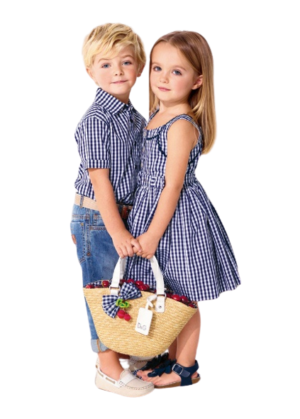

Men's clothes are articles of clothing designed for and worn by men.
Typical men's clothes include trousers, shirts, jeans, suits, sweaters, gloves, jackets, and hats. However, the majority of those clothing items are also items of women's clothing.
The 2010s have brought us the evolution of the “fashion star”.
Fashion bloggers have become mainstream. On the one hand, suddenly fashion is in
the hands of the people, producing a larger variety of styles, reviews, and opinions than ever before.
On the other hand, those being watched are naturally
encouraged to try harder and harder to stand out from the crowd. “Peacocking” became a menswear term in the early part of the decade for “trying too hard”,
although men have generally become more confortable with subtle, tasteful styling.
This period also marked the widespread acceptance of online shopping.
Style enthusiasts from all over the world now have access to more brands than ever, from the convenience of their homes.
The internet also allowed for more start-up brands than ever, marketed using social media and
funded with online resources like kick-starter. In a way, we’re starting to see the re-surgence of the small brand, fueled by the power of
the internet and the desire for consumers to have something limited and exclusive. The best part is, middle men are getting cut-out every day.
Department stores, who’s business is marking-up goods that have already been marked-up by the wholesaler, are losing their stranglehold on the market as
designers now have a scalable solution to sell their products directly to their consumers
Women's clothes are articles of clothing designed for and worn by women.
Typical women's clothes include skirts, dresses, shirts, sweaters, trousers, coats, chemises, and jeans. Some articles of clothing and geared specifically towards women,
but most of the items are the same as items of men's clothing
Understanding your Dressing Code
Before you leave your house, whether wearing casual or for an official look, ensure your skin feels confident.
Let what you wear brings you a smile, and those around you feel respected because you were careful enough to dress nicely.
Let what you wear makes you happy and above all shine.
Can you remember that time you wore something and felt great? Probably that was back in college or to an event you had a couple
of months back. But whatever that day is, at some point, you felt great in something you wore.
That is how you should feel every time you wear any clothing in your closet.
It should never be some days even when trying to remember the last time you felt great becomes hard to trace. Your closet should contain all items that make you confident and comfortable. Anything short of that,
you should give it away or get rid of it.
It is wrong to go and buy a pair of shoes, a dress, handbag, coat, top and others that make you feel less comfortable.
closet is a special space that you spend most of the time choosing what to wear for the day or dressing for your special occasion.
Take time to make that space great. It is sad to treat some days not worthy of treating them with the dress you specifically keep to wear for
special occasions. Women's fashion is great, and wearing beautiful clothes is what you are to focus on wearing.
|

Children's clothing or kids' clothing is clothing for children who have not yet grown to full height. Socks, booties and shoes You'll need socks for the indoors and booties that can be tightly tied for outdoor wear. |